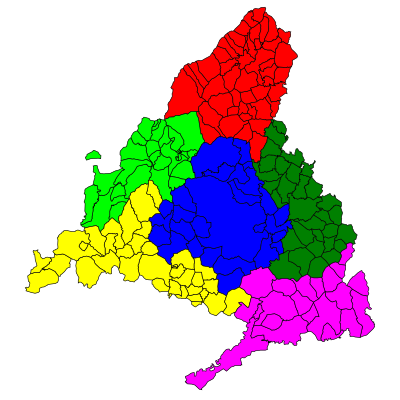
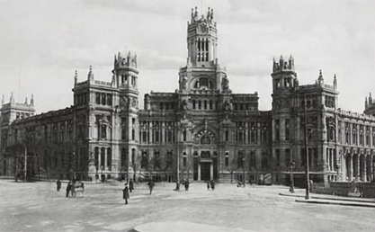
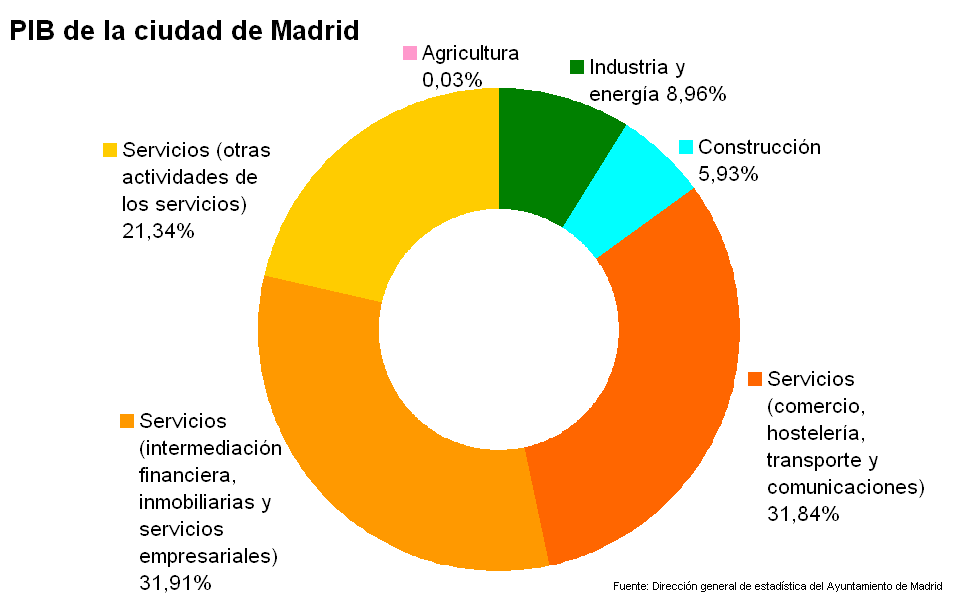

Geografía

Comarcas de la Comunidad de Madrid según la Guía de Turismo Rural y Activo (los municipios del área metropolitana no se incluyen en ninguna).
La Comunidad de Madrid es una comunidad autónoma española uniprovincial. En el artículo 75 la Ley 2/2003, de 11 de marzo, de Administración Local de la Comunidad de Madrid (BOCM de 18 de marzo de 2003), se prevé la creación de comarcas:
Según dispone el artículo 3.3 de la Ley Orgánica 3/1983, de 25 de febrero, de Estatuto de Autonomía de la Comunidad de Madrid, por Ley de la Asamblea de Madrid se podrán crear Comarcas mediante la agrupación de Municipios limítrofes cuyas características determinen intereses comunes precisados de una gestión propia o demanden la prestación de servicios en dicho ámbito en los términos previstos en el artículo 42 de la Ley 7/1985, de 2 de abril, reguladora de las Bases de Régimen Local.
Sin embargo, la Asamblea de Madrid no aprobó ninguna ley para la formación de comarcas.
No obstante, con diversos propósitos (agrícolas, turísticos...) diversos organismos de la administración autonómica han definido informalmente comarcas:
La Guía de Turismo Rural y Activo, editada por la Dirección General de Turismo (Consejería de Cultura y Turismo) define ocho comarcas (dejando fuera de tales comarcas los municipios interiores, pertenecientes al Área Metropolitana de Madrid o al Corredor del Henares.
El Libro Blanco de la Política Agraria y el Desarrollo Rural, editado por la Dirección General de Agricultura y Desarrollo Rural (Consejería de Economía e Innovación Tecnológica) define seis comarcas agrícolas que cubren todo el territorio de la Comunidad.
Estas clasificaciones, no oficiales, conviven con comarcas tradicionales o con otras agrupaciones más modernas (como el Corredor del Henares), también sin regulación oficial.
Historia

La historia de Madrid (España) está marcada por el establecimiento en ella de la corte real (junio de 1561) y, con la consolidación del país, su transformación en la capital del reino. Sin embargo, antes de esto el área de la actual ciudad ya había sido poblada con el establecimiento de comunidades más o menos relevantes. La aparición de Madrid en la historia data del siglo IX, cuando el emir Mohamed I (852-886) levantó una fortaleza en el lugar ocupado actualmente por el Palacio Real.
Economía

La economía de la ciudad de Madrid, con un Producto Interior Bruto de 262.335.000 USD en 2016,es la mayor entre las ciudades españolas y la cuarta entre las europeas. El PIB per cápita se situó en 39.288 USD en el año 2016.
El PIB ha venido creciendo en los últimos años a un ritmo superior que el resto de España.
Áreas económicas
La principal actividad económica de la ciudad son los servicios, que suponen un 85% del total. En concreto los servicios financieros suponen 31,91% del total, el comercio un 31,84%, dentro del que se incluye el turismo (en torno al 10%) y el resto de servicios con un 21,34%. A las tradicionales funciones administrativas, por albergar la Administración central del Estado, y financieras (Madrid es la sede de gran cantidad de empresas que desarrollan su actividad en toda España y acoge la mitad del capital financiero nacional), se han sumado las relacionadas con el transporte o con la pujanza del aeropuerto de Barajas. De hecho los mayores centros de empleo y aportación al PIB de la ciudad de Madrid son el propio aeropuerto e Ifema, el recinto ferial de la ciudad. Por su actividad en el sector aeroespacial, Madrid pertenece a la Comunidad de Ciudades Ariane.
La industria en la ciudad de Madrid, pierde peso poco a poco, para trasladarse a los municipios del área metropolitana, especialmente del arco Sur-sudeste. Aun así la industria sigue suponiendo un porcentaje relevante en el presupuesto de la ciudad.
La construcción es el sector de más crecimiento de Madrid, estimado en un 8,2% en el año 2005. La tendencia muestra un aumento de la construcción no residencial, empujada por la ligera desaceleración del incremento del precio de la vivienda en 2005.
Además, Madrid se ha convertido en los últimos años en una de las ciudades más visitadas de Europa, sólo detrás de París, Londres y Roma y la primera de España. En la ciudad se desarrollan gran cantidad de actividades de carácter turístico, lúdico y cultural.